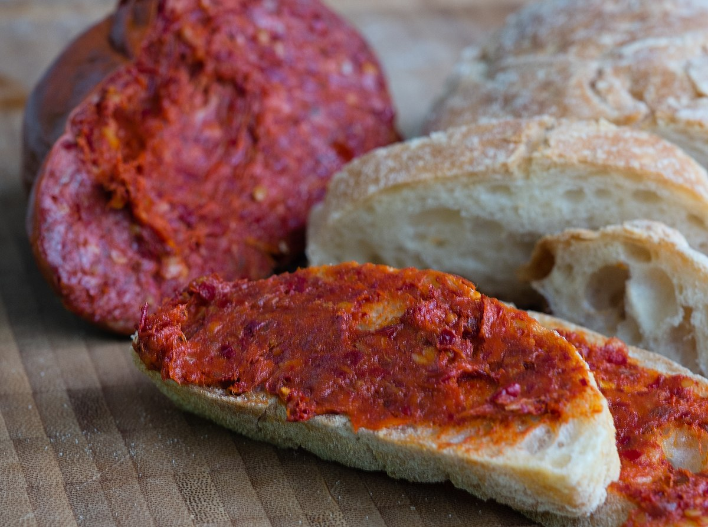

Nduja

Description
'Nduja (Calabrian: [nˈduːja]) is a spicy, spreadable pork sausage from the region of Calabria in Southern Italy. It is similar to Sobrassada from the Balearic Islands in Spain, to the Piedmontese salam d'la duja. It is Calabria's contribution to the many types of Italian salumi, and originates from the area around the small Calabrian town of Spilinga.
Ingredients
- 2kg pork back fat, chilled
- 800g of pork mince, lean, chilled
- 56g of fine salt
- 9g of curing salt, often called Cure No. 2 (get this from specialist curing retailers online)
Steps
- Before you begin, place the bowl of a stand mixer (or a very large mixing bowl) into the freezer to chill and get all of your ingredients ready
- Set up a meat mincer with the finest mincing plate attached. Mince the pork back fat and pork mince, then place in the frozen mixing bowl (you can also get your butcher to mince these for you if you don’t have a mincer at home)
- Add the salt and Cure No. 2 to the pork mixture
- Add the dried and fresh chillies along with the paprika
- Using your hands or a stand mixer with a paddle attachment, combine all the ingredients until a sticky paste forms. You may also need to complete this step in batches depending on the size of your bowl